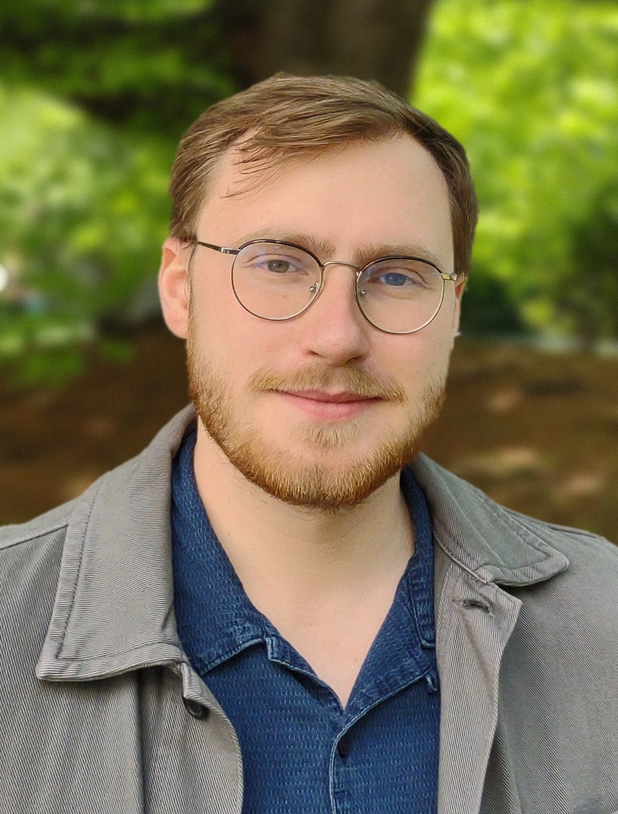

I am a PhD candidate in Philosophy at UC Berkeley. I work in philosophy of language, epistemology and philosophical logic. My research focuses on what conditional sentences mean, what it is for something to matter, when evidence supports a conclusion, and what you can and cannot do with probabilities. I'm an external member of Ivano Ciardelli's ERC project on inquisitive modal logic.
My PhD advisors are John MacFarlane, Seth Yalcin, and Ivano Ciardelli.
Before my PhD, I was a Fulbright scholar at Berkeley and MIT, and studied at the Munich Center for Mathematical Philosophy with Ivano Ciardelli and at the University of Oslo.
Here is my CV. You can reach me at ommundsen@berkeley.edu.
Papers
Published
- On the Ambiguity of Will-Conditionals
- Probabilities of Conditionals: Updating Adams
- Disambiguating Will-Conditionals
Under review and in progress
- A paper on mattering
- A paper on frequencies of conditionals
- A paper evidential support and probability
- A paper on epistemic readings of disjunctions